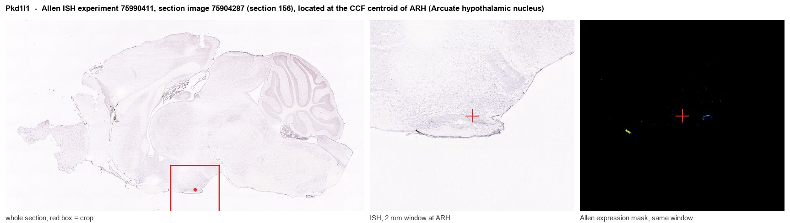
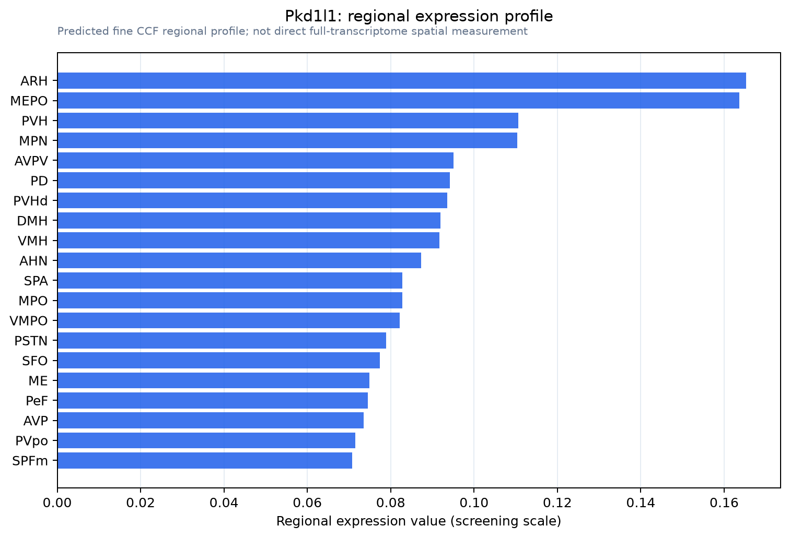

Pkd1l1
Polycystin-1-like protein 1 (Polycystin-1L1) (PC1-like 1 protein) (Polycystic kidney disease protein 1-like 1) (Protein rikishi)
Spatial tier: REGION_BIASED · Class: ION_CHANNEL · Top region: ARH (Arcuate hypothalamic nucleus) · Positive regions: 30/554
Function in ARH: evidence, prediction, innovation
- Gene function
- PKD1L1 is a large multi-pass membrane protein of the polycystin-1 family. It has no pore itself but binds the TRP-family cation channel PKD2/polycystin-2 in primary cilia, forming a receptor-channel complex that converts mechanical or chemical cues into Ca2+ signals. In the embryonic node this complex reads leftward nodal flow and restricts Nodal signalling to the left side.
- Region function
- The arcuate nucleus sits at the base of the hypothalamus next to the median eminence, where AgRP/NPY and POMC neurons sense leptin, ghrelin and nutrients to set food intake and energy expenditure; its kisspeptin and dopaminergic neurons also gate GnRH pulses and prolactin.
- Published in this region
- expression only Expression only. Allen ISH (sagittal experiment 75990411) gives ARH the strongest adult-brain Pkd1l1 signal, about fivefold over whole-brain background (energy 0.51 vs 0.10), with no functional study. All published work is developmental: Field et al. 2011 showed Pkd1l1 is required for left-right asymmetry and binds Pkd2; Grimes et al. 2016 placed it upstream of Pkd2 in nodal cilia.
- Predicted function
- Prediction: Pkd1l1 most plausibly works in primary cilia of arcuate neurons or third-ventricle tanycytes, where ciliary signalling already controls energy balance, supplying a PKD2-dependent Ca2+ conductance tuned to CSF flow or ventricular composition. Conditional deletion in arcuate cells should blunt ciliary Ca2+ responses and shift feeding or fasting responses modestly, without the gross ciliopathy of constitutive mutants.
- Innovation
- ★★★★★ 5/5 Pkd1l1 has been studied almost only in embryonic node cilia; no adult brain or hypothalamic work exists despite clear arcuate ISH signal.
- Tools
- Pkd1l1 loss-of-function lines from the left-right field (Field 2011; Grimes 2016); PKD2 antibodies and pharmacology as the obligate partner; Allen ISH experiment 75990411. No Cre driver or selective ligand known.
- References
Direct evidence located at the region

Allen ISH experiment 75990411, section image 75904287 (section 156): the section that contains the CCF centroid of Arcuate hypothalamic nucleus according to the Allen image-to-atlas alignment (reference_to_image), with a 2 mm window around that point. Left: whole section, red box = window. Middle: ISH signal. Right: Allen's expression-mask view of the same window. open this image in the Allen viewer
Direct spatial evidence

Regional expression figure

Predicted WMB × fine-CCF profile; not direct full-transcriptome spatial measurement.
Spatial profile
Evidence and specificity
- Evidence status
- PREDICTED_FINE
- Direct sources
- None; predicted localization only
- Exclusive threshold
- 12 positive regions out of 554
- Spatial specificity
- 0.303
- Top-region fraction
- 0.052
- Filter status
- PASS
Interpretation limits
- Cell-type-to-region projection is imputed expression, not direct spatial measurement.
- Adult reference atlases do not establish stability across age, sex, strain, state, or disease.
- Transcript abundance does not guarantee protein abundance or genetic-tool performance.